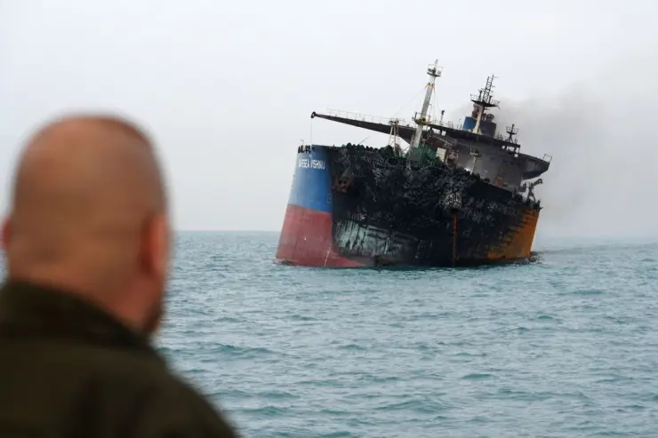

Global Oil Prices Surge Amid Hormuz Shipping Fears

March 13, 2026 — UBNews Energy Desk
Global oil prices rose sharply as tensions around the Strait of Hormuz continued to disrupt tanker traffic and energy markets worldwide. Traders reacted quickly to the growing risk that oil shipments passing through the narrow waterway could face delays or security threats.
The strait is one of the most critical energy shipping routes on the planet. Roughly one-fifth of the world’s oil supply moves through the passage each day, connecting the Persian Gulf with global markets. When shipping traffic slows or stops, energy markets often respond with immediate price increases.
Energy analysts say the recent surge in oil prices reflects uncertainty about whether tanker traffic will remain steady in the coming weeks. Even temporary disruptions can ripple through global fuel markets, affecting gasoline prices and industrial costs.
Insurance rates for tankers traveling through the region have also increased as maritime risk assessments are updated. Some shipping companies have reportedly delayed voyages while awaiting additional naval escorts or security guarantees.
Economic experts warn that prolonged disruption in the strait could affect industries worldwide, from aviation to manufacturing, because oil remains a core component of the global energy system.